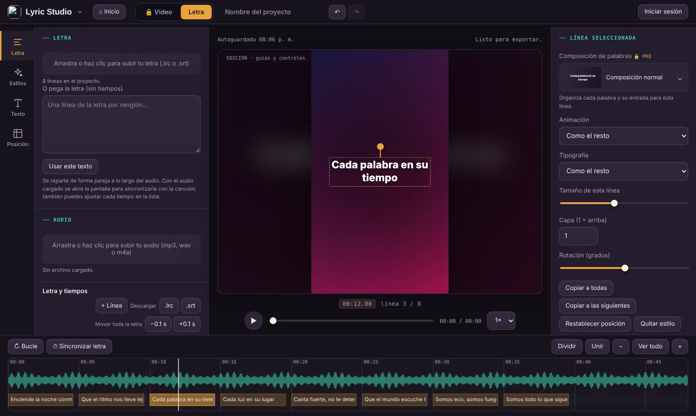
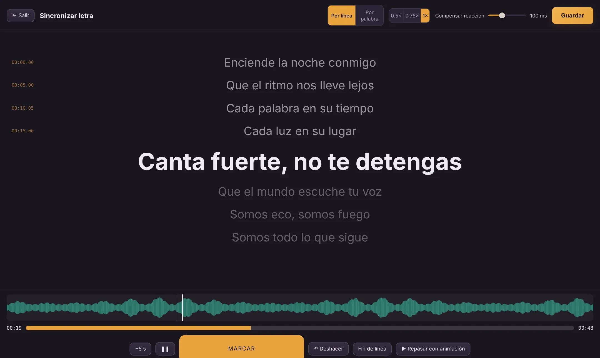
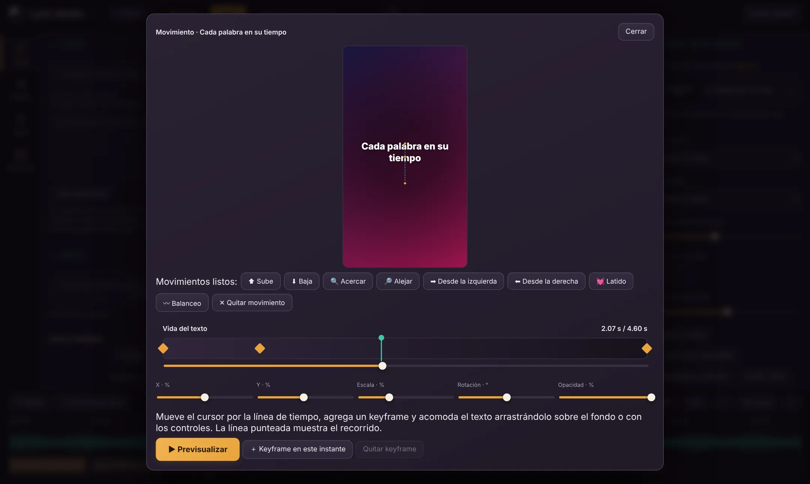

Sincronización en pantalla completa
Marca cada línea con la barra espaciadora mientras suena la canción. Baja la velocidad a 0.5× para mayor precisión.
Sube tu audio y tu letra (.LRC, .SRT o texto), sincronízala con un toque y exporta un video listo para TikTok, Reels, Shorts o YouTube. Sin instalar nada.
Lyric Studio abre el 15 de noviembre de 2026. Mientras tanto, mira todo lo que vas a poder hacer.
Un editor pensado para una sola cosa: que tu letra se vea bien y entre justo en el ritmo.
Marca cada línea con la barra espaciadora mientras suena la canción. Baja la velocidad a 0.5× para mayor precisión.
Arrastra bloques, recorta bordes, divide y une líneas. Los bordes se imantan al cursor y a las líneas vecinas.
Desde fuentes de impacto hasta manuscritas. Con PRO también subes la tuya y viaja dentro del proyecto.
Por línea, por palabra o por letra: fundido, rebote, máquina de escribir, karaoke con resaltado progresivo y más.
Color, degradado, imagen o tu propio video en bucle, con zoom, desplazamiento o latido y control de oscurecido.
9:16, 1:1, 4:5 y 16:9. Un mismo proyecto sirve para cada red sin rehacerlo.
Anima posición, escala, giro y opacidad de cada línea, con movimientos listos o a tu medida.
Render cuadro por cuadro a 480p, 720p o 1080p y hasta 240 FPS según tu equipo. En Free exportas en WebM.
De un archivo de audio a un video terminado, todo en la misma pestaña.
Arrastra un mp3, wav o m4a y tu letra en .LRC, .SRT o texto plano.
Marca cada línea al ritmo de la canción y elige fuente, animación y colores.
Descarga tu video y súbelo a TikTok, Instagram, YouTube o donde quieras.
15 estilos listos con tipografía, colores, contorno, resplandor, sombra y animación. Pruébalos aquí y ajusta lo que quieras después.
Guarda tus propios estilos y reutilízalos en cualquier proyecto.
Un espacio de trabajo con panel, visor y timeline, como los editores de video.



Dos formas de editar con más precisión: una para usar dos monitores y otra para ver el original y el resultado a la vez.
Doble pantalla de verdad. Edita en el monitor principal y manda la salida a otro, sin que nada te tape la timeline.
Vista doble en la misma pantalla: a la izquierda editas con ayudas, a la derecha ves el video tal como se va a exportar.
Elige entre cinco temas de color. Esta página también cambia: pruébalo.
Empieza con lo simple y crece cuando lo necesites. PRO es un pago único, sin suscripción.
Minimal no lleva marca de agua. En Free es obligatoria; PRO permite personalizarla o quitarla. PRO se paga una sola vez (US$ 15), sin suscripción. *En web se pueden seleccionar MP4 hasta 1080p y 240 FPS, pero la compatibilidad y estabilidad dependen del navegador y del equipo. 4K/240 FPS está previsto para la versión de PC, no para la web. Las características son preliminares y pueden cambiar.
El lanzamiento es el 15 de noviembre de 2026. Esta página se actualizará ese día con el acceso al editor.
No. Lyric Studio funciona en el navegador y el video se procesa en tu equipo. Para exportar en MP4 se recomienda Chrome o Edge actualizados.
Archivos .LRC y .SRT, o texto plano sin tiempos. Si pegas texto, el editor te lleva a sincronizarlo con el audio.
Tu audio, imágenes y videos se procesan en tu navegador. El proyecto se guarda como un archivo .lyr en tu equipo y se autoguarda localmente.
Free permite crear y exportar en WebM con la marca LyricStudio.site. PRO agrega MP4, todas las fuentes y animaciones, keyframes, capas, estilo por línea, marca de agua propia y herramientas avanzadas.
No, es un pago único de US$ 15 con PayPal. Si algo falla, escribe a support@lyricstudio.site.
Sí. Se recorta para llenar el cuadro, se repite en bucle y se silencia: se usa el audio del proyecto.
Lyric Studio abre el 15 de noviembre de 2026. Vuelve ese día y crea tu primer video.
Descubrir las funcionesAbre el editor y ten tu primer video listo hoy. Es gratis para empezar.
Abrir Lyric Studio